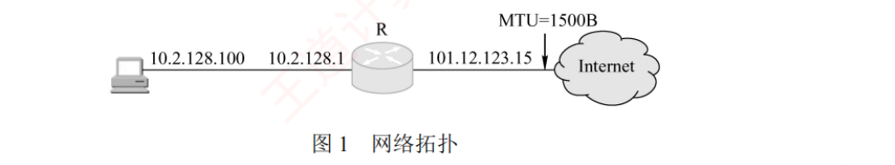

408
408最后一层。不用背太多：DNS 的报文数、HTTP 的 RTT 账本、端口表、邮件三协议。两个重心：失分密度看电子邮件，按分值看 HTTP 全栈大题。
其之壹两种模型
C/S：服务器长期在线，客户之间不直接通信。P2P：每个节点既是客户也是服务器；可扩展；上传能力随节点增长。
再深一层
| 选项 | 判定 | 依据（背这一列） |
|---|---|---|
| A | ✅ | P2P 的定义：节点权利与义务对等，无固定角色划分 |
| B | ❌ 错 | C/S 的定义性限制：客户之间不直接通信，一切数据经服务器中转。教材原例：两个浏览器不会直接交换数据 |
| C | ✅ | 客户主动发起、服务器被动等待（注意这只约束「发起」，不约束连接建立后的数据方向，见本节 03 题） |
| D | ✅ | P2P 把分发任务分散到众多节点并行上传，用户可从多个对等方同时下载 ⟹ 分发一个文件给 N 个用户时更快 |
⚠️ B 是最容易被放过的选项，因为现实中「两台电脑当然能互相传文件」。但题干限定了「在 C/S 模型中」——一旦两个客户直接通信，它们就已经在演 P2P 了。读题时先锁死模型前提。
🔗 串联：C 项的「主动/被动」到 6.4 会变成 SMTP 推 vs POP3 拉（2012 真题）；D 项的「并行下载缩短总时间」与 ch5 的多条并行 TCP 连接缩短页面加载时间（6.5 的 2024 真题）是同一个思路。
其之貳DNS
DNS 要点
应用层，主要 UDP 53（报文小，可用 TCP）。
递归查询：我问你，你帮我查到答案。迭代查询：你告诉我下一步问谁。
主机 → 本地域名服务器：通常递归。本地 → 其他：通常迭代。
缓存：可以大幅减少查询。
最多查询次数：根 → 顶级 → 权威；再多一级，多一次。
数报文
迭代、完全无缓存：本地问根、顶级、权威（可能多层）。每一次都是一问一答。 2 个问/答 + n 次迭代 = 2(n+1)。 有缓存时最少 0 次。
再深一层
主机 ⟶ 本地：递归 ⟹ 1 条 本地 ⟶ 根 ：递归 ⟹ 1 条（根替它把剩下的路走完） ⟹ 两个 1 条 ✅📌 记牢这一句：「递归 ⟹ 无论有多少级，发起方永远只发 1 条」——因为递归的语义就是「我全权委托给你」，委托一次即可。
⚠️ 本题的 C、D 两项永远不可能对：只要主机走递归（教材说这是唯一可能），主机就只发 1 条，「多条, ×」的两个选项可以直接划掉，四选一秒变二选一。
🔗 本题与 2016 真题（本节 06 题）合起来是 DNS 计算题的全部套路：2010 数「发几条」，2016 数「最少最多几次」，2020 数「几个 RTT」——三道题的底层都是同一张图（图 6.6 的两幅子图），把图默画出来，三道题一起解决。
再深一层
本地域名服务器有 DNS 高速缓存（教材 6.2.3 末段） 若该域名的映射还在缓存里（未超 TTL）⟹ 直接返回，一条查询都不发 ⟹ 最少 0 次 ⟹ 选项 B、D 的「1」立刻排除【最多 = 4】考的是数标号层数
| 第几次 | 问谁 | 它管什么 |
|---|---|---|
| 1 | 根 | 返回 .com 顶级服务器地址 |
| 2 | com 顶级 | 返回 xyz.com 的权限服务器地址 |
| 3 | xyz.com 权限 | 返回 abc.xyz.com 的权限服务器地址 |
| 4 | abc.xyz.com 权限 | 返回 www.abc.xyz.com 的最终 IP ✅ |
⚠️ 选项 A（0, 3）是最狠的干扰项：它假设 xyz.com 与 abc.xyz.com 属于同一个区（不再往下切）。那样确实只要 3 次——但题目问的是「最多」，要按「每一级都单独设区」的最坏情况算。
⚠️ 别把 www 也数成一次：www 是主机名，它的记录就存在 abc.xyz.com 的权限服务器里，不单独成区。
再深一层
| 应用 | FTP 数据 | FTP 控制 | TELNET | SMTP | DNS | TFTP | HTTP | POP3 | SNMP |
|---|---|---|---|---|---|---|---|---|---|
| 协议 | TCP | TCP | TCP | TCP | UDP | UDP | TCP | TCP | UDP |
| 端口 | 20 | 21 | 23 | 25 | 53 | 69 | 80 | 110 | 161 |
⚠️ 补记两个表外常考的：HTTPS = 443、DHCP = 67（服务器）/ 68（客户端），基于 UDP。DHCP 必须用 UDP 的理由要能说出来：客户在分配到 IP 地址前无法建立 TCP 连接（见 6.3 的 12 题）。
🔗 串联：本题与 2021 真题（「DNS 协议的功能与意义」）是同一个考点追踪标签下的两年，2018 问传输层协议，2021 问在整个 Web 访问中 DNS 起什么作用——一个考「是什么」，一个考「干什么」。
其之參FTP
FTP 关键
两条 TCP 连接：控制连接（21，全程保持）、数据连接（传一次建立一次，传完就关）。
主动模式：服务器用 20 端口连客户。被动模式：服务器随便开一个端口，客户去连。
带外控制，有状态。
再深一层
第一刀：TCP 还是 UDP？ FTP 要可靠传输 ⟹ TCP ⟹ 砍掉 C、D 第二刀：控制连接还是数据连接？ FTP 命令走的是控制连接（带外传送）⟹ 砍掉 B ⟹ 选 A ✅📌 「带外传送（Out-of-band）」是 FTP 的招牌性质，教材专门点名：控制信息与数据信息通过不同的逻辑信道传送。
| 带外传送 | 带内传送 | |
|---|---|---|
| 代表协议 | FTP | HTTP |
| 控制与数据 | 两条独立 TCP 连接 | 同一个 TCP 连接 |
🔗 串联：2018 真题（6.2 的 08 题）问「哪个应用层协议可用无连接服务」，答案是 DNS——那道题的解析里把 FTP 排除的理由，与本题第一刀完全相同。
再深一层
| 主语（谁去连） | 宾语（连谁的端口） | 判定 | |
|---|---|---|---|
| C 项 | 服务器 | 客户端的 TCP 20 端口 | ❌ 20 不是客户端的端口 |
| D 项 | 客户端 | 服务器的 TCP 21 端口 | ✅ 正确 |
正确的表述应该是： 服务器用自己的 20 号端口，去连客户端提供的那个随机端口。⚠️ 教材在解析末尾补了一条极重要的话，很多人漏读：「FTP 服务器是否使用 TCP 20 端口建立数据连接与传输模式有关：PORT 模式使用 TCP 20 端口，PASV 模式由服务器随机选定。」
| 模式 | 谁主动连 | 服务器数据端口 | 客户怎么知道对方端口 |
|---|---|---|---|
| PORT（主动，默认） | 服务器连客户 | 20 | 客户用 PORT 命令把自己的端口告诉服务器 |
| PASV（被动） | 客户连服务器 | 随机 | 服务器经控制连接把随机端口告诉客户 |
📌 A、B 两项就是 2023 真题第 1 问的答案：数据连接非持久、控制连接持久。2017 与 2023 是同一考点在选择题与综合题两种形态下的两次出现。
其之肆电子邮件
邮件协议
SMTP：TCP 25，推送，只支持 7 位 ASCII。所以有 MIME 把二进制编码成 ASCII（base64）。
POP3：TCP 110，下载后（通常）删除，无状态。
IMAP：TCP 143，在服务器上操作，有状态。
HTTP 也可以取邮件（网页邮箱）。
再深一层
| 阶段 | 方向 | 推/拉 | 协议 |
|---|---|---|---|
| ① | 用户 1 → 自己的邮件服务器 | 推 | SMTP |
| ② | 服务器 → 服务器 | 推 | SMTP |
| ③ | 邮件服务器 → 用户 2 | 拉 | POP3（或 IMAP / HTTP） |
⚠️ ③ 为什么不能是 SMTP：因为 SMTP 是「推」，邮件服务器不会主动把邮件推给用户代理——用户可能根本不在线（邮件是异步通信，教材开篇就说「电子邮件不要求通信双方同时在线」）。邮件先存进用户邮箱，等用户来拉。
⚠️ ① 为什么不是 POP3：POP3 只有「服务器→用户代理」一个方向。2013 真题的 Ⅳ 项、2025 真题的 Ⅱ Ⅲ 项，考的都是这个方向问题。
🔗 本题就是图 6.8 的原题——把图 6.8 默画出来，这道题连思考都不需要。
再深一层
SMTP 仅支持传输 7 位 ASCII 码文本邮件 ⟹ 无法直接传非英语字符（中文、俄文，甚至带重音的法文/德文） ⟹ 无法直接传可执行文件或其他二进制对象 ⟹ 所以要有 MIME：先编码成 ASCII，再交给 SMTP
| 选项 | 类型 | 能否直传 |
|---|---|---|
| A JPEG 图像 | 二进制 | ❌ 要 MIME 编码 |
| B MPEG 视频 | 二进制 | ❌ 要 MIME 编码 |
| C EXE 文件 | 二进制 | ❌ 要 MIME 编码 |
| D ASCII 文本 | 7 位 ASCII | ✅ 直传 |
⚠️ 与 6.3 的 FTP 形成对照（本章最值得记的一组反差）：
| FTP | SMTP | |
|---|---|---|
| 传二进制 | 直接支持（Binary 方式） | 不支持，必须 MIME 编码 |
| 原因 | 基于 TCP 字节流，本就 8 位透明 | 协议设计年代早，限定 7 位 ASCII |
Ⅰ. 只支持传输 7 比特 ASCII 码内容
Ⅱ. 支持在邮件服务器之间发送邮件
Ⅲ. 支持从用户代理向邮件服务器发送邮件
Ⅳ. 支持从邮件服务器向用户代理发送邮件
再深一层
| 说法 | 判定 | 依据 |
|---|---|---|
| Ⅰ 只支持 7 比特 ASCII | ✅ | SMTP 的历史遗留限制，2018 真题考同一条 |
| Ⅱ 服务器之间发送 | ✅ | SMTP 的第 ② 段作用范围 |
| Ⅲ 用户代理→服务器 | ✅ | SMTP 的第 ① 段作用范围 |
| Ⅳ 服务器→用户代理 | ❌ | SMTP 是「推」，不做「拉」 |
| 年 | 问谁 | 正确的说法 | 错误的说法 |
|---|---|---|---|
| 2013 | SMTP | 7 位 ASCII · 服务器间 · UA→服务器 | 服务器→UA |
| 2025 | POP3 | UA 从服务器读取 · 一条 TCP 连接收多封 | UA→服务器发送 · 服务器间收发 |
再深一层
| 传输层协议 | 服务类型 | 本章的代表 |
|---|---|---|
| TCP | 有连接、可靠 | FTP · SMTP · POP3 · IMAP · HTTP |
| UDP | 无连接、不可靠 | DNS · TFTP · SNMP · DHCP |
⚠️ 但要小心一个易混点：「HTTP 是无连接的」（6.5 教材原句）与本题不矛盾——
HTTP 无连接：指 HTTP 这一层不建立专门的「HTTP 连接」 HTTP 用 TCP：指它的传输层用的是有连接可靠的服务 ⟹ 两句话说的是两层，都对如果本题问的是 HTTP，答案同样是 D（有连接可靠）——因为问的是传输层服务类型。
其之伍HTTP
HTTP 特点
TCP 80；无状态（用 Cookie 补）。
非持续连接（1.0）：每个对象一个 TCP。持续连接（1.1）：一个 TCP 多个对象；分非流水线、流水线。
方法：GET、POST、HEAD、PUT、DELETE。
状态码：200 OK，301 永久移动，304 未修改，404，500。
代理缓存：减少访问。
RTT 账本（n 个对象 + 1 个 HTML）
| 方式 | RTT |
|---|---|
| 非持续、串行 | 2(n+1) |
| 非持续、无限并行 | 4 |
| 非持续、m 条并行 | 2 + 2⌈n/m⌉ |
| 持续、非流水线 | n + 2 |
| 持续、流水线 | 3 |
一个 RTT 建连，一个 RTT 拿 HTML。不算发送时延。
起点差一词差 1 RTT
「从开始建立连接」和「从连接已建立开始」差 1 个 RTT。题目给了 MSS 和文件大小，上面的公式全部作废，要画逐轮 cwnd。
再深一层
| 选项 | 会不会用到 | 在哪一步用到 |
|---|---|---|
| A PPP | 可能 | 接入网络时（拨号/ADSL 接入 ISP），教材原句列了「CSMA/CD 协议或 PPP（涉及 ISP 接入或广域网传输时）」 |
| B ARP | 可能 | 不知道默认网关或同网段主机的 MAC 地址时，用 IP 查 MAC |
| C UDP | 可能 | DNS 基于 UDP；若缓存未命中就要发 DNS 查询 |
| D SMTP | 不可能 ✅ | SMTP 只用于发邮件（UA→服务器、服务器→服务器），与浏览网页无关 |
DHCP（开机拿 IP / 掩码 / 网关 / DNS 地址，基于 UDP） ↓ ARP（查 DNS 服务器或默认网关的 MAC） ↓ DNS（域名 → IP，基于 UDP） ↓ TCP 三次握手（端口 80） ↓ HTTP（GET / 响应） ↓ 全程还有：IP（转发）· CSMA/CD 或 PPP（链路层）· ICMP（差错报告）⚠️ 本章的「不可能用到」题只有一个答案模板：邮件协议（SMTP / POP3 / IMAP）——因为它们是另一条业务线，与 Web 完全无交集（除非题干说的是「用浏览器登录 Web 邮箱」，那时也只有 HTTP）。
🔗 2021 真题（综 04）是本题的综合题版本：问「H1 除了 HTTP 还运行了哪个应用层协议」，答案是 DNS，并要写出逐层封装关系 DNS 报文 → UDP 数据报 → IP 数据报 → CSMA/CD 帧。两道题合起来把这份清单考了个遍。
GET /index.html HTTP/1.1 Host: www.test.edu.cn Connection: Close Cookie: 123456下列叙述中，错误的是（ ）。
再深一层
| 报文行 | 含义 | 对应选项 |
|---|---|---|
| GET /index.html HTTP/1.1 | 请求行：方法 GET、相对 URL /index.html、版本 1.1 | A ✅ |
| Host: www.test.edu.cn | 指明服务器域名（正因为有它，请求行才能用相对 URL） | B ✅ |
| Connection: Close | 非持续连接（keep-alive 才是持续） | C ❌ 说反了 |
| Cookie: 123456 | 浏览器出示识别码 ⟹ 说明曾访问过该站（首次访问不会带 Cookie） | D ✅ |
Connection: keep-alive ⟹ 持续连接（HTTP/1.1 默认） Connection: close ⟹ 非持续连接📌 D 项的推理链值得再走一遍：Cookie 由服务器首次访问时通过 Set-cookie 发放 ⟹ 浏览器本地存有它 ⟹ 说明之前来过。如果是第一次访问，请求报文里不会有 Cookie 首部行。
⚠️ 注意这是「请求」报文，所以是 Cookie 而不是 Set-cookie——若题干给的是响应报文里出现 Set-cookie，含义就变成「服务器正在给你发一个新识别码」，通常意味着首次访问。
| 偏移 | 十六进制 | ASCII |
|---|---|---|
| 0000 | 00 21 27 21 51 ee 00 15 c5 c1 5e 28 08 00 45 00 | .!|!Q... ..^(..E. |
| 0010 | 01 ef 11 3b 40 00 80 06 ba 9d 0a 02 80 64 40 aa | ...;@... .....d@. |
| 0020 | 62 20 04 ff 00 50 e0 e2 00 fa 7b f9 f8 05 50 18 | b ...P.. ..{...P. |
| 0030 | fa f0 1a c4 00 00 47 45 54 20 2f 72 66 63 2e 68 | ......GE T /rfc.h |
| 0040 | 74 6d 6c 20 48 54 54 50 2f 31 2e 31 0d 0a 41 63 | tml HTTP /1.1..Ac |
请回答以下问题。
1）Web 服务器的 IP 地址是什么？该主机的默认网关的 MAC 地址是什么？
2）该主机在构造图 2 的数据帧时，使用什么协议确定目的 MAC 地址？封装该协议请求报文的以太网帧的目的 MAC 地址是什么？
3）假设 HTTP/1.1 协议以持续的非流水线方式工作，一次请求-响应时间为 RTT，rfc.html 页面引用了 5 幅 JPEG 小图像。问从发出图 2 中的 Web 请求开始到浏览器收到全部内容为止，需要多少 RTT？
4）该帧封装的 IP 分组经过路由器 R 转发时，需修改 IP 分组头中的哪些字段？

2）ARP 用于解决 IP 地址到 MAC 地址的映射问题。主机的 ARP 进程在本以太网以广播形式发送 ARP 请求分组，在以太网上广播时，以太网帧的目的地址为全 1，即 FF-FF-FF-FF-FF-FF。
3）HTTP/1.1 协议以持续的非流水线方式工作时，服务器发送响应后仍在一段时间内保持这段连接，客户在收到前一个请求的响应后才能发出下一个请求。注意题目说的是从发出 Web 请求开始，所以此时 TCP 连接已经建立。第 1 个 RTT 用于请求 Web 页面，客户收到第一个请求的响应后（还有 5 个请求未发送），每访问一次对象就用去 1RTT。因此共需 1+5 = 6RTT 后浏览器收到全部内容。
4）私有地址和 Internet 上的主机通信时，须由 NAT 路由器进行网络地址转换，把 IP 数据报的源 IP 地址（本题为私有地址 10.2.128.100）转换为 NAT 路由器的一个全球 IP 地址（本题为 101.12.123.15）。因此，源 IP 地址字段 0a 02 80 64 变为 65 0c 7b 0f。IP 数据报每经过一个路由器，TTL 值就减 1，并重新计算首部检验和。若 IP 分组的长度超过输出链路的 MTU，则总长度字段、标志字段、片偏移字段也会发生变化。
再深一层
以太网首部 14B（目的 MAC 6 + 源 MAC 6 + 类型 2） IP 首部中，目的 IP 前面有 16B（4 行 × 4B） ⟹ 目的 IP ＝ 整帧第 31～34 字节 ＝ 40 aa 62 20 ⟹ 十进制 64.170.98.32 ✅ （0x40=64, 0xaa=170, 0x62=98, 0x20=32） 默认网关 MAC ＝ 帧的前 6 字节（目的 MAC） ⟹ 00-21-27-21-51-ee ✅为什么目的 MAC 就是网关：Web 服务器在另一个网络，主机只能把帧交给默认网关（10.2.128.1）转发——目的 IP 是服务器，目的 MAC 是网关，这是 ch4 的铁律。【第 2 问 · ARP 与广播地址】
用什么协议？ARP（解决 IP → MAC 的映射） ARP 请求分组以广播形式发送 ⟹ 承载它的以太网帧目的 MAC ＝ 全 1 ＝ FF-FF-FF-FF-FF-FF ✅【第 3 问 · 持续非流水线，起点是「发出请求」】
起点是「发出图 2 中的 Web 请求」⟹ TCP 连接已建立，不算握手 第 1 个 RTT：请求并收到 rfc.html 非流水线 ⟹ 5 幅 JPEG 逐个来，各 1RTT ⟹ 共 1 + 5 ＝ 6RTT ✅ 对照：若是流水线 ⟹ 1 + 1 ＝ 2RTT 若从建连算起 ⟹ 再 +1 ⟹ 7RTT【第 4 问 · 经过路由器要改哪些字段】
| 字段 | 怎么变 | 为什么 |
|---|---|---|
| 源 IP 地址 | 0a 02 80 64 → 65 0c 7b 0f | NAT：私有 10.2.128.100 → 全球 101.12.123.15 |
| 生存时间 TTL | 减 1 | 每经过一个路由器就减 1 |
| 首部检验和 | 重新计算 | 首部改了就必须重算 |
| 总长度 / 标志 / 片偏移 | 可能变 | 若分组长度超过输出链路的 MTU 需分片 |
| 字段 | 值 | 印证 |
|---|---|---|
| 源 MAC | 00-15-c5-c1-5e-28 | 与题干给的主机 MAC 吻合 ✅ |
| 类型 | 0x0800 | 上层是 IP |
| IP 首部长度 / 总长度 / TTL / 协议 | 20B / 495 / 128 / 6 | 协议 6 ＝ TCP |
| 源 IP | 10.2.128.100 | 与题干吻合 ✅ |
| 源端口 / 目的端口 | 1279 / 80 | 80 ⟹ 确实是 Web 请求 ✅ |
| 载荷 | GET /rfc.html HTTP/1.1 | 与 ASCII 栏一致 ✅ |
⚠️ 考场提速：第 1 问不要逐字节读，直接算偏移 14+16 = 30 ⟹ 第 31 字节起，去 `0010` 行末尾找 40 aa、`0020` 行开头找 62 20。全题应在 8 分钟内完成。
领域展开
DNS：UDP 53；递归 / 迭代；无缓存 2(n+1) 报文。
FTP：两连接，21 控制，20 数据。
邮件：SMTP 推推，POP3 拉；7 位 ASCII + MIME。
HTTP：非持续 2(n+1)，持续 n+2，流水线 3。